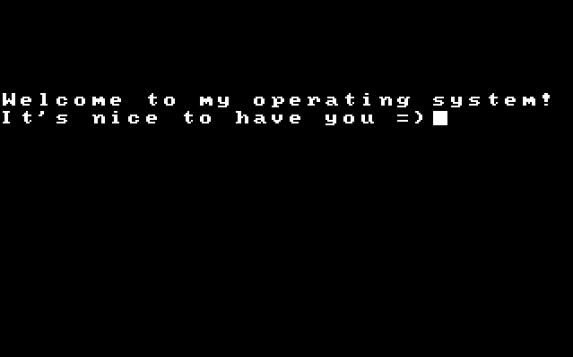

OS_P
OS_P is a project I took on when my passion was first ignited for computers, I decided that I wanted to take on something difficult, and slowly improve it as my knowledge improved. I didn't get very far when I first began , but I kept coming back. First during my first year of university, when I got as far as running a kernel before stopping, and second after my university graduation.
After my university graduation, I committed to getting somewhere with all of the knowledge I had learned about low level computing and computer components. The culmination of this so far is having an almost complete custom text based typing screen.
The plan for the future of this operating system currently is to have a complete working text based system, with a working filesystem and the ability to play some games.
The project is far from complete, however with the current standing of the program, I am happy with how it currently works and have began working on other projects again before I pick it up and keep working.
Developed Using: NASM Assembly, C
Link to Project

Sonic Classic
This began as a recreation of a single video game I played a lot as a child, Sonic the Hedgehog 2. After developing it for a short while, though, I decided that I wanted to try my hand at making the entire series of classic Sonic the Hedgehog games.
The plan for this project is to include both the game itself, that can run any level from Sonic the Hedgehog 1-3 with a smooth experience between the levels. And the program will include a level editor so that anyone who wants to create a custom level can import sprite sheets and make their own.
This project has only just begun, and is just transitioning out of the planning phase, so there are no images to show yet.
Developed Using: C++, SDL
Link to Project

OpenDeck
This project is still in the basic stages at the moment, however the plan is for this program to serve as an open source alternative to a StreamDeck.
OpenDeck will allow users to create custom virtual configurations within the application, using several different kinds of buttons, knobs and screens. These configurations will then be able to interface with your computer. E.g. Opening applications, changing scenes in video software.
The program will then allow the deck layout to be installed onto a raspberry pi, allowing for these virtual configurations to be built and kept on your desk.
The plan is for this program to also be able to interface with Homeassistant later on, so that the configuration can control things like lighting and automations.
Developed Using: Qt, C++
Link to Project